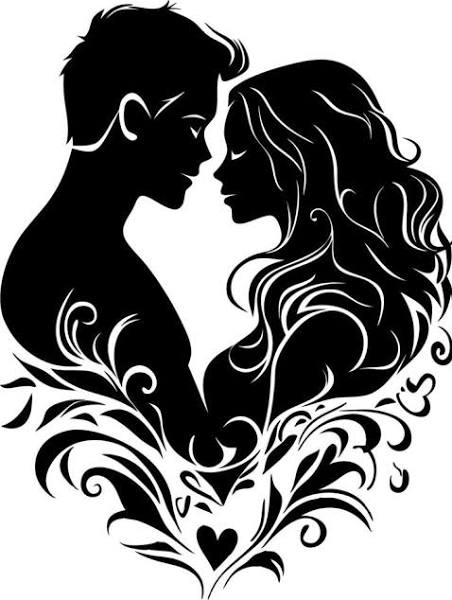

Шаг 1: Абсолютный свет и иллюзия вечности
Здесь размещается текст о зарождении чувств, бабочках в животе и абсолютном доверии.
В самом начале кажется, что законы физики и логики бессильны. Мир сужается до размеров одного человека. Ты растворяешься в звуке его голоса, прощаешь любые странности и искренне веришь: это навсегда. На этом этапе мы любим не реального человека, а тот безупречный образ, который сами же и создали в своей голове.
